| Image | Description |
|---|---|
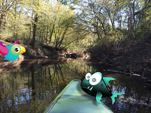 |
Layers Manipulation This upstream image from the perspective of a kayak paddler is of a small inlet on the Cape Fear River. It features two additional layers: a cartoon bird flying in frame from the left and a cartoon fish leaping over the bow of the kayak. The cartoon fish has a dropshadow to enhance the illusion that it is above the boat.
|
Content Filter 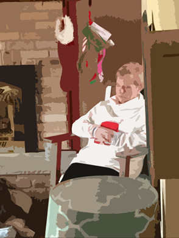 Paint Daubs Filter
Stained Glass Filter
|
Filters Manipulation Content Filter Settings
Number of Levels: 6 Edge Simplicity: 6 Edge Fidelity: 3
Paint Daubs Settings
Brush Size: 26 Sharpness: 7 Brush Type: Simple
Stained Glass Settings
Cell Size: 9 Border Thickness: 4 Light Intensity: 5
|
Brightness Adjustment 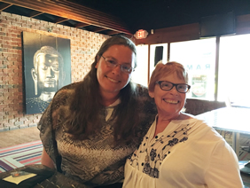 Black and White Adjustment 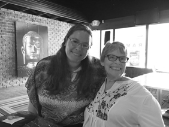 Photo Filter Adjustment 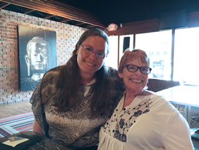 |
Image Adjustments
Photo Filter adjustment applied. Selected Cooling Filter (82) to add some blue light to the image and offset the yellow undertones.
Applied Black and White adjustment
Brightness adjusted from 0 to 77 |
Width: 500px Width: 300px 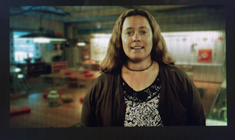 Width: 150px
|
Image Resizing
|
Original Image 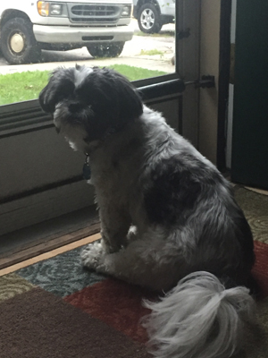 50% Compression 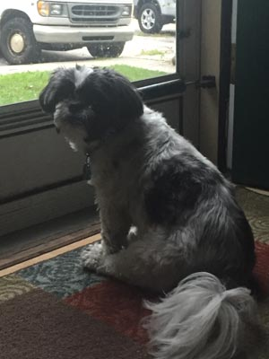 100% Compression 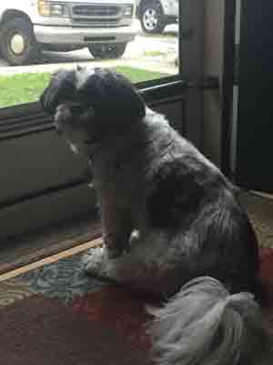 |
Image Compression |
| 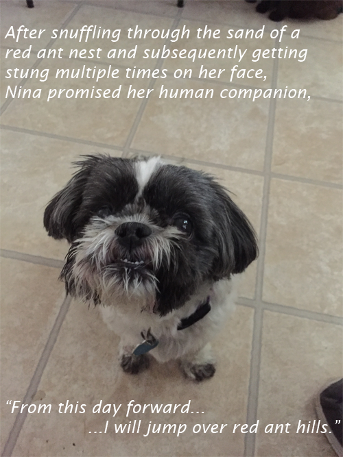 | Text on Image After snuffling through the sand of a red ant nest and subequently getting stung multple times on her face, Nina promised her human companion, "From this day forward, I will jump over red ant hills." |
PNG 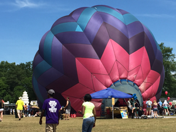 JPEG GIF 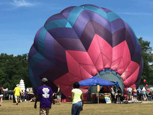 |
Image Formats At the smallest file size, 136kb, the GIF has a slight degredation in image quality. Shadows are not as pronounced and there is color banding in the blue of the sky.
The JPG/JPEG image also has excellent color quality. The file size is 205kb.
At 263kb, the PNG image has the largest file size. The color quality is excellent. |